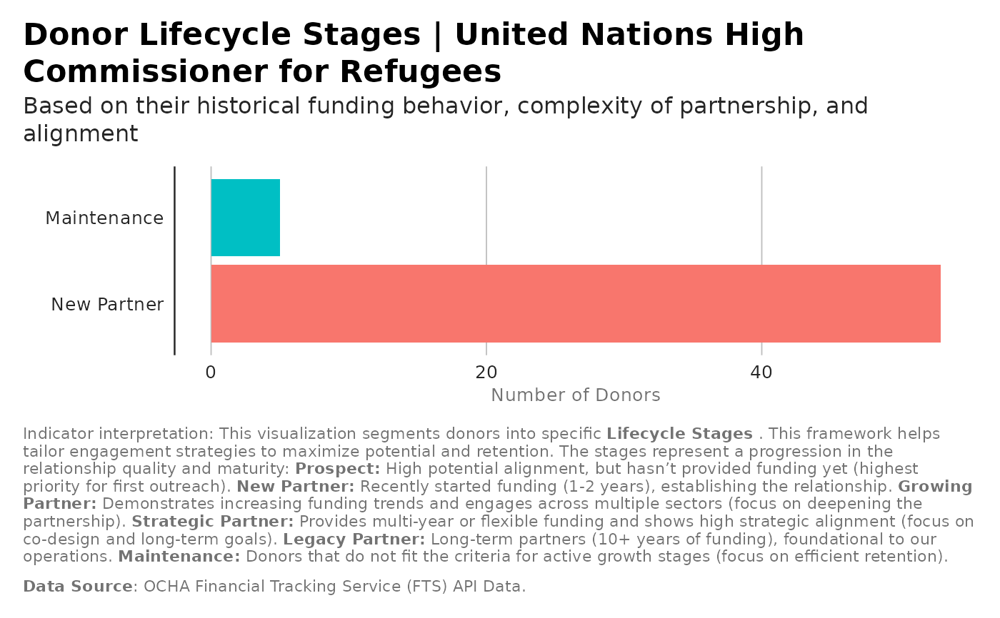

Donor Lifecycle Stage Scoring
Source:R/analysis_donor_lifecycle_stage.R
analysis_donor_lifecycle_stage.RdAssigns donors to lifecycle stages:
Prospect (alignment > 0.7, no funding)
New Partner (1-2 years funding)
Growing Partner (increasing amounts, multiple sectors)
Strategic Partner (multi-year, flexible funding)
Legacy Partner (10+ years, co-design initiatives)
Details
Uses flows to compute engagement_frequency, funding_trend (slope), multiyear_share proxy, and partnership_complexity proxy, scoped to a specific recipient organization.
Examples
recipient_name <- "United Nations High Commissioner for Refugees"
stages <- analysis_donor_lifecycle_stage(flows, recipient_name= recipient_name )
ggplot2::ggplot(stages, ggplot2::aes(x = stage)) +
ggplot2::geom_bar( ggplot2::aes(fill = stage)) +
ggplot2::coord_flip() +
ggplot2::labs(title = paste0("Donor Lifecycle Stages for ", recipient_name),
subtitle = "Based on their historical funding behavior, complexity
of partnership, and alignment",
x = "",
y = "Number of Donors",
caption = paste(
"Indicator interpretation:",
"This visualization segments donors into specific **Lifecycle Stages** .
This framework helps tailor engagement strategies to maximize potential
and retention. The stages represent a progression in the relationship
quality and maturity: ",
"**Prospect:** High potential alignment, but hasn't provided funding yet
(highest priority for first outreach). ",
" **New Partner:** Recently started funding (1-2 years), establishing the
relationship.",
" **Growing Partner:** Demonstrates increasing funding trends and engages
across multiple sectors (focus on deepening the partnership). ",
"**Strategic Partner:** Provides multi-year or flexible funding and shows
high strategic alignment (focus on co-design and long-term goals). ",
"**Legacy Partner:** Long-term partners (10+ years of funding),
foundational to our operations. ",
"**Maintenance:** Donors that do not fit the criteria for active
growth stages (focus on efficient retention).",
"\n\n",
"**Data Source**: OCHA Financial Tracking Service (FTS) API Data."
)) +
unhcrthemes::theme_unhcr(grid = "X", axis = "Y", axis_title = TRUE,
legend=FALSE)
